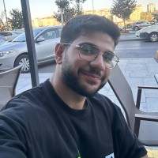

Ömer Faruk Dokgöz
Areas of Interest
Ömer’in ilgi alanları moleküler genetik, nörobilim ve biyoteknolojiyi kapsar. Gen ifadesi ve hücresel sinyal ağlarının deneysel ve hesaplamalı yaklaşımlarla yorumlanmasına odaklanır.
IPS Contributions
IPS içinde atölye planlama, teknik içerik yazımı ve ekipler arası veri düzeni standardizasyonuna katkı sağlar. Proje yazımı ve literatür tarama süreçlerini destekler.
Future Aspirations
Çeviri nörobilim ve biyoteknoloji kesişiminde araştırmalar yürütmeyi; disiplinler arası işbirlikleriyle deneysel bulguları klinik ve uygulamalı çıktılara dönüştürmeyi hedefler.